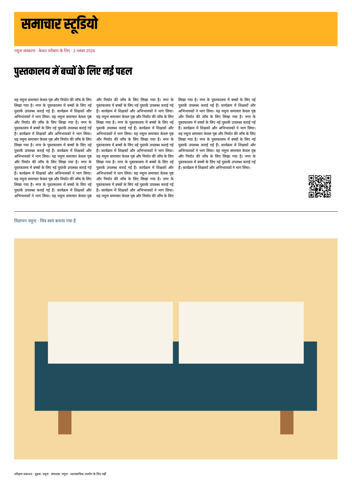
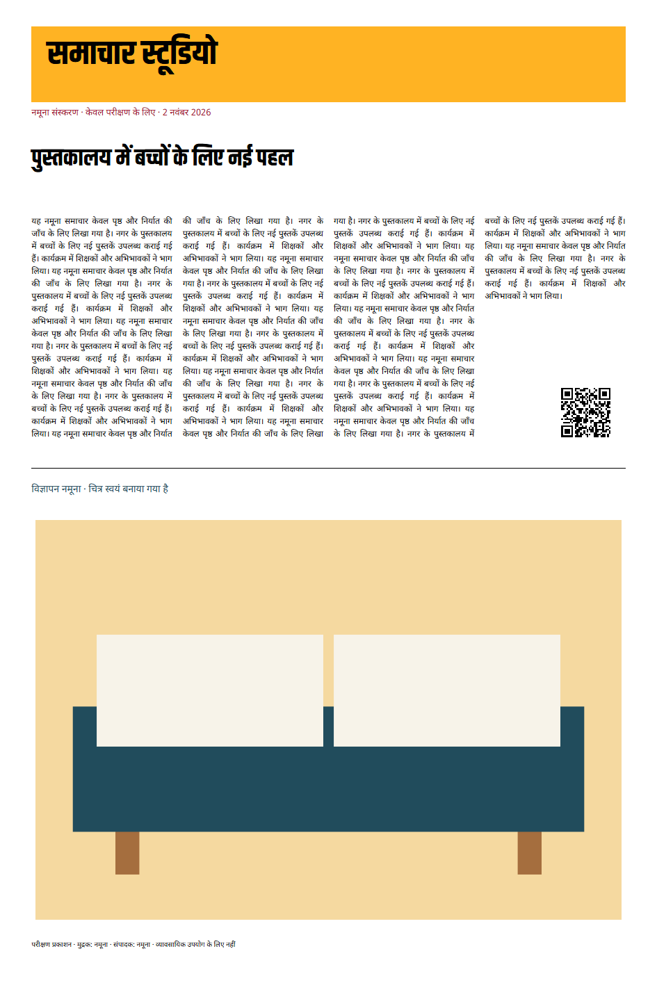
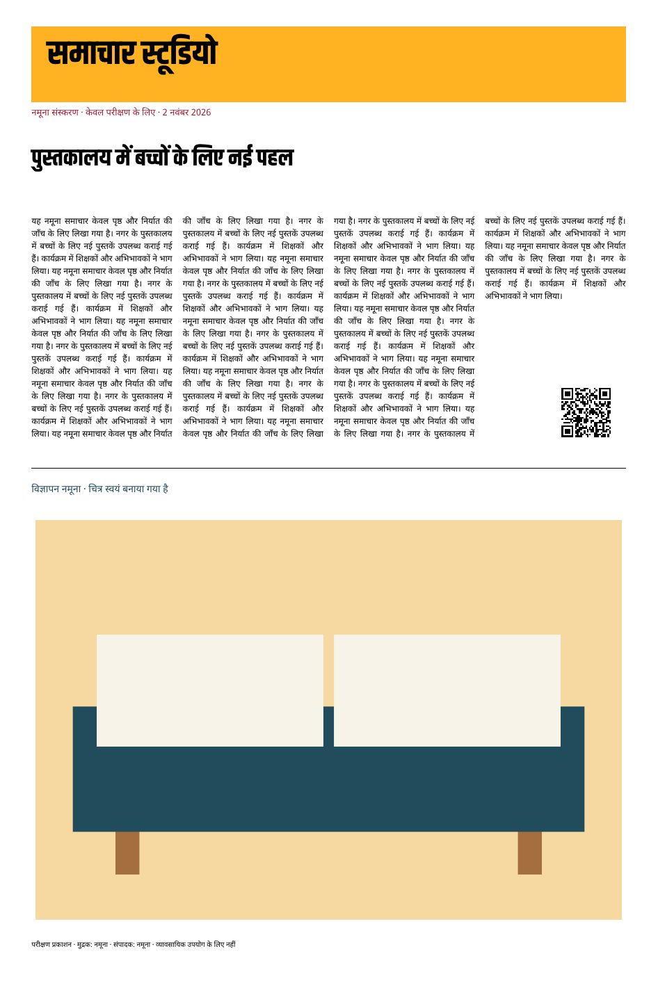

Two editable page sizes, the same Hindi layout engine and bundled fonts. All content and artwork here are synthetic.
| Check | Result |
|---|---|
| Reference sizes | 297 × 420 mm and 250 × 380 mm |
| Browser errors during rendering | 0 |
| Overflow, missing assets/fonts, placeholders | Rejected with an identifier; covered by renderer tests |
| Remaining integration | Existing colour/PDF-X exporter, QR fixture, final validation and atomic publication |
49 engine lines. Open intermediate PDF · Fixture document

61 engine lines. Open intermediate PDF · Fixture document


Resolved settings and assumptions. Known limitations: no frame chains or rotations; unsupported objects fail explicitly; story paragraphs currently use the engine's existing joined-text behaviour.